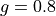

Scattering phase functions¶
All the scattering phase functions that can be used in the Monte Carlo
simulator are implemented by subclassing
xopto.mcbase.mcpf.pfbase.PfBase. The
xopto.mcbase.mcpf module includes a number of commonly
used scattering phase functions:
xopto.mcbase.mcpf.hg.Hgimplements the Henyey-Greenstein scattering phase functionxopto.mcbase.mcpf.mhg.MHgimplements the Modified Henyey-Greenstein scattering phase functionxopto.mcbase.mcpf.gk.Gkimplements the Gegenbauer kernel scattering phase functionxopto.mcbase.mcpf.mgk.MGkimplements the modified Gegenbauer kernel scattering phase functionxopto.mcbase.mcpf.pc.Pcimplements the Power of cosine scattering phase functionxopto.mcbase.mcpf.mpc.MPcimplements the Modified Power of cosine scattering phase functionxopto.mcbase.mcpf.rayleigh.Rayleighimplements the isotropic Rayleigh scattering phase functionxopto.mcbase.mcpf.lut.Lutandxopto.mcbase.mcpf.lut.LutEximplement the lookup table-based scattering phase functions that need to be used when there is no analytical inverse of the cumulative probability density function. In this case, the scattering angle cannot be sampled analytically, instead an efficient numerical sampling scheme is required. Note that the use ofLutandLutExis tightly coupled to thexopto.pfmodule that implements numerous scattering phase functions with a number of numerical utilities for computing quantifiers such as ,
,  ,
,  and Legendre moments,
computing the scattering cross sections of spherical particles, angular
distribution of scattering probabilities, working with monodisperse,
or various standard and custom size distributions, layered spherical particles,
etc.
and Legendre moments,
computing the scattering cross sections of spherical particles, angular
distribution of scattering probabilities, working with monodisperse,
or various standard and custom size distributions, layered spherical particles,
etc.
The individual scattering phase functions are conveniently imported into
the xopto.mcvox.mc and xopto.mcvox.mcpf modules.
Analytical sampling¶
The following example shows how to create a Henyey-Greenstein scattering
phase function with the anisotropy  set to 0.8:
set to 0.8:
from xopto.mcvox import mc
pf = mc.mcpf.Hg(0.8)
The parameters of the scattering phase function can be updated at any time
through the class properties. The following examples changes the value
of parameter g from 0.8 to 0.9.
pf.g = 0.9
The number and naming of parameters depends on the type of the scattering phase
function. The Gegenbauer kernel scattering phase function
xopto.mcbase.mcpf.gk.Gk exposes two parameters,
namely gg and :code:’a’.
pf = mc.mcpf.Gk(gg=0.9, a=0.5)
Any of the two parameters can be accessed through the class properties:
pf.gg = 0.7
pf.a = 0.4
Lookup table-based numerical sampling¶
Complex scattering phase functions, such as the scattering phase functions of
spherical particles that can be computed with the Mie theory, can be used with
the Monte Carlo simulator through the lookup table scattering phase functions
xopto.mcbase.mcpf.lut.Lut or
xopto.mcbase.mcpf.lut.LutEx. In the first step we need to create
an instance of a scattering phase function that enables computation of various
scattering phase function quantifiers, such as the Legendre moments,
, , , etc. These
can be found in the xopto.pf that conveniently imports all
the implemented scattering phase functions.
The following example shows how to create a Monte Carlo simulator-compatible
scattering phase function xopto.mcbase.mcpf.lut.Lut() for spherical
polystyrene particles of diameter 1.0 μm suspended in water and for
550 nm light. Note that we utilize the xopto.materials package
from which we import the refractive index module xopto.materials.ri.
from xopto import pf
from xopto.mcvox import mc
from xopto.materials import ri
mie = pf.Mie(ri.polystyrene.default(550e-9), ri.water.default(550e-9), 1.0e-6, 550e-9)
mc_mie = mc.mcpf.Lut(*mie.mclut())
The same result can be accomplished by xopto.mcbase.mcpf.lut.LutEx()
that takes the scattering phase function type and a list of arguments for the
corresponding constructor (parameters of the scattering phase function).
from xopto import pf
from xopto.mcvox import mc
from xopto.materials import ri
params = [ri.polystyrene.default(550e-9), ri.water.default(550e-9), 1.0e-6, 550e-9]
mc_mie = mc.mcpf.LutEx(pf.Mie, params)
The default lookup table size is set to 2000, which should yield an accurate
representation for the vast majority of the scattering phase functions.
However, for scattering phase functions with an extremely high anisotropy that
exceeds 0.95, a larger lookup table size might be required.
The size of the lookup table can be controlled with the lutsize
parameter.
from xopto import pf
from xopto.mcvox import mc
from xopto.materials import ri
params = [ri.polystyrene.default(550e-9), ri.water.default(550e-9), 1.0e-6, 550e-9]
mc_mie = mc.mcpf.LutEx(pf.Mie, params, lutsize=4000)
mie = pf.Mie(ri.polystyrene.default(550e-9), ri.water.default(550e-9), 1.0e-6, 550e-9)
mc_mie = mc.mcpf.Lut(*mie.mclut(lutsize=4000))
For scattering phase functions that come in a nonparametric form, such as when
measured with a goniometer, use the xopto.pf.discrete.Discrete that
can take values defined at discrete scattering angles. Then follow the above
examples to obtain a Monte Carlo simulator-compatible scattering phase
function with
Lut() or
LutEx().
Note that any scattering phase function in xopto.pf can
be converted into a lookup table-based Monte Carlo simulator-compatible
scattering phase function. The following example crates a lookup table-based
implementation of the Henyey-Greenstein (Hg)
scattering phase function with anisotropy :
from xopto import pf
from xopto.mcvox import mc
params = [0.8]
hg_lut = mc.mcpf.LutEx(pf.Hg, params)
The use of lookup-table based scattering phase functions in the Monte Carlo simulations will not have a notable performance impact as long as all the lookup table data can be kept in the constant memory of the OpenCL device, the size of which is for a typical GPU around 64 kB.